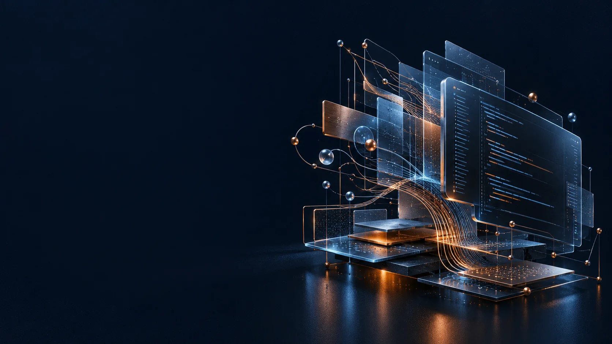

[CURSO: OPENCODE 2] [ENTORNO: LOCAL] [PÚBLICO: CONSULTORES]
Curso de OpenCode 2
Planifica, construye y mantiene software con un agente de código.
Taller práctico para consultores: fundamentos de OpenCode 2 y dos demos aplicadas, desde un proyecto nuevo hasta mantenimiento legacy.

Una sesión
todo el contenido en un mismo encuentro
2 h máximo
duración total del taller
2 demos aplicadas
proyecto nuevo + mantenimiento legacy
OpenCode 2
entorno preparado con el script del kit
Temario
Seis bloques que conectan fundamentos, herramientas y práctica.
-
0
Bienvenida y contexto
Encuadre del taller, sondeo del entorno de cada participante y reglas de sala.
-
1
Fundamentos A: arquitectura, instalación, interfaces y modos
El modelo es el cerebro y OpenCode es el cuerpo: instalación, interfaces y los modos Plan y Build en vivo.
-
2
Fundamentos B: productividad, modelos, skills, SDD y MCP
Atajos y gestos diarios, modelos, ecosistema de skills, especificar antes de codificar y MCP.
-
3
Demo 1: «The Rabbit», proyecto desde cero
De documentos de entrada a una app corriendo y verificada, sin escribir código a mano.
-
4
Demo 2: mantenimiento legacy seguro
Reglas, mapa, jaula de git y contexto exacto: corregir un cálculo con números que cuadran al céntimo.
-
5
Cierre, entorno y preguntas
El script de setup, lo que se llevan los participantes y las preguntas aparcadas durante la sesión.
Todo el contenido se imparte en una sola sesión de hasta 2 horas.
Cómo usar los archivos del taller
Tres pasos: preparar el entorno antes, consultar el cheat sheet durante y repetir los flujos después.
-
Pon tu entorno en verde (antes del taller)
Ejecuta el script de setup: primero en modo verificación y después para aplicar. Es idempotente y no pide permisos de administrador.
Windows
cd "ruta\al\kit\taller" # 1) solo verifica, sin instalar nada powershell -ExecutionPolicy Bypass -File .\setup\setup-windows.ps1 -Check # 2) aplica y deja el entorno listo powershell -ExecutionPolicy Bypass -File .\setup\setup-windows.ps1macOS / Linux
cd "ruta/al/kit/taller" # 1) solo verifica, sin instalar nada bash setup/setup-macos-linux.sh --check # 2) aplica y deja el entorno listo bash setup/setup-macos-linux.shWindows: el script del kit usa la ruta con npm probada localmente con OpenCode 2.0.27. La documentación oficial de V2 indica que los gestores de paquetes no están soportados en Windows y ofrece el binario independiente.
Sustituye
ruta\al\kit\tallerpor la ruta real donde tengas el kit del taller.opencode --versionresponde «opencode v2.x.y»opencode mcp listContext7 aparece conectado/connect+/modelsdentro del TUI: proveedor y modelo elegidos
-
Durante el taller, con el cheat sheet al lado
La hoja de referencia del participante: atajos verificados, slash-commands, sesiones, skills y MCP, incluido lo que NO existe en el deck.
instructor/cheat-sheet-participantes.md
-
Después, repite los flujos
Los dos flujos completos con prompts listos para copiar, la verdad técnica de OpenCode 2 verificada contra la documentación oficial, el catálogo de skills y la transcripción del deck original.
docs/verificacion-v2.md docs/skills-catalogo.md docs/transcripcion-deck.md
Los materiales del kit se comparten al terminar el taller; esta página solo explica cómo usarlos.
Quién lo imparte